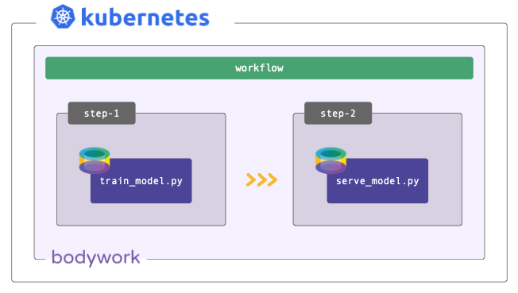
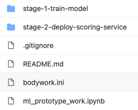
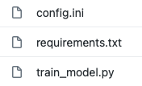
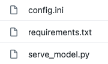

Deploying Python ML Models with Bodywork
Posted on Tue 01 December 2020 in machine-learning-engineering

Once you have a viable solution to a Machine Learning (ML) task, that is often developed within a Jupyter notebook, you are then faced with an altogether different problem - how to engineer the solution into your product and how to maintain the performance of the solution as new instances of data are experienced.
What is this Tutorial Going to Teach Me?
- How to take a solution to a ML task, as developed within a Jupyter notebook, and map it into two separate Python modules for training a model and then deploying the trained model as a RESTful model-scoring API.
- How to execute these ‘train’ and ‘deploy’ modules - that together form a simple ML pipeline (or workflow) - remotely on a Kubernetes cluster, using GitHub and Bodywork.
- How to interact-with and test the model-scoring service that has been deployed to Kubernetes.
- How to run the train-and-deploy workflow on a schedule, so the model is periodically re-trained when new data is available, but without the manual intervention of an ML engineer.
Introduction
I’ve written at length on the subject of getting machine learning into production - an area that is now referred to as Machine Learning Operations (MLOps), and which is a hot topic within the field of ML engineering. For example, my blog post on Deploying Python ML Models with Flask, Docker and Kubernetes is viewed by hundreds of ML practitioners every month; at the recent Data and AI Summit there was an entire track devoted to ‘Productionizing Machine Learning’; Thoughtwork’s essay on Continuous Delivery for ML is now an essential reference for all ML engineers, together with Google’s paper on the Hidden Technical Debt in Machine Learning Systems; and MLOps even has its own entry on Wikipedia.
Why is MLOps Getting so Much Attention?
In my opinion, this is because we are at a point where a significant number of organisations have now overcome their data ingestion and engineering problems. They are able to provide their data scientists with the data required to solve business problems using machine learning, only to find that, as Thoughtworks put it,
“Getting machine learning applications into production is hard”
To tackle some of the core complexities of MLOps, ML engineering teams appear to have settled on approaches that are based-upon deploying containerised ML models, usually as RESTful model-scoring services, to some type of cloud platform. Kubernetes is especially useful for this as I have written about before.
Bodywork for MLOps
Containerising ML code using Docker, pushing the build artefacts to an image repository and then configuring Kubernetes to orchestrate ML pipelines into batch jobs and services, requires skills and expertise that most ML engineers do not have the time (and often the desire) to learn. Scale this scenario into one where there are multiple models to worry about, all needing to be re-trained and re-deployed, and it is easy to imagine how large and undesirable a burden this can become.
This is where the Bodywork MLOps framework steps-in - to deliver your code to the right place and then execute it at the right time, so that your models are trained, deployed and available to the rest of your team. Bodywork is a tool aimed at ML engineers to help them:
- continuously deliver ML code - for training models and defining model-scoring services - by pulling it directly from Git repositories and into pre-built containers running on Kubernetes.
- automate the configuration of Kubernetes jobs and deployments to run complex ML workflows, that result in ML model-scoring service deployments.
In other words, Bodywork automates the repetitive tasks that most ML engineers think of as DevOps, allowing them to focus their time on what they do best - machine learning.
This post serves as a short tutorial on how to use Bodywork to productionise the most common MLOps use-case - train-and-deploy.

We will refer to the example bodywork ML project (GitHub) repository and the files within it.
Prerequisites
If you want to execute the example code, then you will need:
- to install the bodywork Python package on your local machine.
- access to a Kubernetes cluster - either locally using minikube or Docker-for-desktop, or as a managed service from a cloud provider, such as EKS from AWS or AKS from Azure.
- Git and a basic understanding of how to use it.
Familiarity with basic Kubernetes concepts and some exposure to the kubectl command-line tool will make life easier. The introductory article I wrote on Deploying Python ML Models with Flask, Docker and Kubernetes, is a good place to start.
Starting with a Solution to a ML Task
The ML problem we have chosen to use for this tutorial, is the classification of iris plants into one of their three sub-species using the famous iris plants dataset. The ml_prototype_work notebook found in the root of this tutorial’s GitHub repository, documents the trivial ML workflow used to train a Decision Tree classifier as a solution to this multi-class classification task, as well as to prototype some of the work that will be required to engineer and deploy the final prediction (or scoring) service.
The Bodywork Project
Bodywork ML projects must be stored as Git repositories, from where pre-built Bodywork containers running on Kubernetes (k8s), can pull them. There are no build artefacts - such as Docker images - that need to be built as part of the deployment process. Take a look at the Git repository for the example project and you will find the following directory structure,

The sub-directories contain all the code required to run a single stage - for example, in the stage-1-train-model directory you will find the following files,

And similarly, in the stage-2-deploy-scoring-service directory you will find the following files,

The remainder of this tutorial will be spent explaining the purpose of these files and demonstrating how they are used to map the ML task developed within the Jupyter notebook, into a ML workflow that can be executed on a remote Kubernetes cluster, to provide a model-scoring service ready for production.
Configuring a Bodywork Batch Stage for Training the Model
The stage-1-train-model directory contains the code and configuration required to train the model within a pre-built container on a k8s cluster, as a batch workload. Using the ml_prototype_work notebook as a reference, the train_model.py module contains the code required to:
- download data from an AWS S3 bucket;
- pre-process the data (e.g. extract labels for supervised learning);
- train the model and compute performance metrics; and,
- persist the model to the same AWS S3 bucket that contains the original data.
The requirements.txt file lists the 3rd party Python packages that will be Pip-installed on the pre-built Bodywork host container, as required to run the train_model.py script. Finally, the config.ini file allows us to specify that this stage is a batch stage (as opposed to a service-deployment), that train_model.py should be the script that is run, as well as an estimate of the CPU and memory resources to request from the k8s cluster, how long to wait and how many times to retry, etc.
Configuring a Bodywork Service-Deployment Stage for Creating a ML Scoring Service
The stage-2-deploy-scoring-service directory contains the code and configuration required to load the model trained in stage-1-train-model and use it as part of the code for a RESTful API endpoint definition, that will accept a single instance (or row) of data encoded as JSON in a HTTP request, and return the model’s prediction as JSON data in the corresponding HTTP response. We have decided to use the Flask framework with which to create our REST API server, which will be deployed to k8s and exposed as a service on the cluster, after this stage completes. The use of Flask is not a requirement in any way and you are free to use different frameworks - e.g. FastAPI.
Within this stage’s directory, requirements.txt lists the 3rd party Python packages that will be Pip-installed on the Bodywork host container in order to run serve_model.py, which defines the REST API server containing our ML scoring endpoint. The config.ini file allows us to specify that this stage is a service-deployment stage (as opposed to a batch stage), that serve_model.py should be the script that is run, as well as an estimate of the CPU and memory resources to request from the k8s cluster, how long to wait for the service to start-up and be ‘ready’, which port to expose and how many instances (or replicas) of the server should be created to stand-behind the cluster-service.
Configuring the Complete Bodywork Workflow
The bodywork.ini file in the root of the project repository contains the configuration for the whole workflow - a workflow being a collection of stages, run in a specific order, that can be represented by a Directed Acyclic Graph (or DAG). The most important element is the specification of the workflow DAG, which in this instance is simple,
DAG = "stage-1-train-model >> stage-2-deploy-scoring-service"
i.e. train the model and then (if successful) deploy the scoring service.
Testing the Workflow
Firstly, make sure that the bodywork package has been Pip-installed into a local Python environment that is active. Then, make sure that there is a namespace setup for use by bodywork projects - e.g. iris-classification - by running the following at the command line,
$ bodywork setup-namespace iris-classification
Which should result in the following output,
creating namespace=iris-classification
creating service-account=bodywork-workflow-controller in namespace=iris-classification
creating cluster-role-binding=bodywork-workflow-controller--iris-classification
creating service-account=bodywork-jobs-and-deployments in namespace=iris-classification
Then, the workflow can be tested by running the workflow-controller locally using,
$ bodywork workflow \
--namespace=iris-classification \
https://github.com/bodywork-ml/bodywork-ml-ops-project \
master
Which will run the workflow defined in the master branch of this GitHub repository, all within the iris-classification namespace. The logs from the workflow-controller and the containers nested within each constituent stage, will be streamed to the command-line to inform you on the precise state of the workflow, but you can also keep track of the current state of all k8s resources created by the workflow-controller in the iris-classification namespace, by using the kubectl CLI tool - e.g.,
$ kubectl -n iris-classification get all
Once the workflow has completed, the ML scoring service deployed within your cluster can be tested from your local machine, by first of all running kubectl proxy in one shell, and then in a new shell use the curl tool as follows,
$ curl http://localhost:8001/api/v1/namespaces/iris-classification/services/bodywork-ml-ops-project--stage-2-deploy-scoring-service/proxy/iris/v1/score \
--request POST \
--header "Content-Type: application/json" \
--data '{"sepal_length": 5.1, "sepal_width": 3.5, "petal_length": 1.4, "petal_width": 0.2}'
If successful, you should get the following response,
{
"species_prediction":"setosa",
"probabilities":"setosa=1.0|versicolor=0.0|virginica=0.0",
"model_info": "DecisionTreeClassifier(class_weight='balanced', random_state=42)"
}
Executing the Workflow on a Schedule
If you’re happy with the test results, then you can schedule the workflow-controller to operate remotely on the cluster as a k8s cronjob. As an example, to setup the the workflow to run every hour, use the following command,
$ bodywork cronjob create \
--namespace=iris-classification \
--name=iris-classification \
--schedule="0 * * * *" \
--git-repo-url=https://github.com/bodywork-ml/bodywork-ml-ops-project
--git-repo-branch=master
Each scheduled workflow will attempt to re-run the workflow, end-to-end, as defined by the state of this repository’s master branch at the time of execution - performing rolling-updates to service-deployments and automatic roll-backs in the event of failure.
To get the execution history for all iris-classification jobs use,
$ bodywork cronjob history \
--namespace=iris-classification \
--name=iris-classification
Which should return output along the lines of,
JOB_NAME START_TIME COMPLETION_TIME ACTIVE SUCCEEDED FAILED
iris-classification-1605214260 2020-11-12 20:51:04+00:00 2020-11-12 20:52:34+00:00 0 1 0
Then to stream the logs from any given cronjob run - e.g. to debug and/or monitor for errors - use,
$ bodywork cronjob logs \
--namespace=iris-classification \
--name=iris-classification-1605214260
Cleaning Up
To clean-up the deployment in its entirety, delete the namespace using kubectl - e.g. by running,
$ kubectl delete ns iris-classification
Where to go from Here
Read the official Bodywork documentation or ask a question on the Bodywork discussion forum.
Disclosure
I am one of the co-founders of Bodywork Machine Learning!